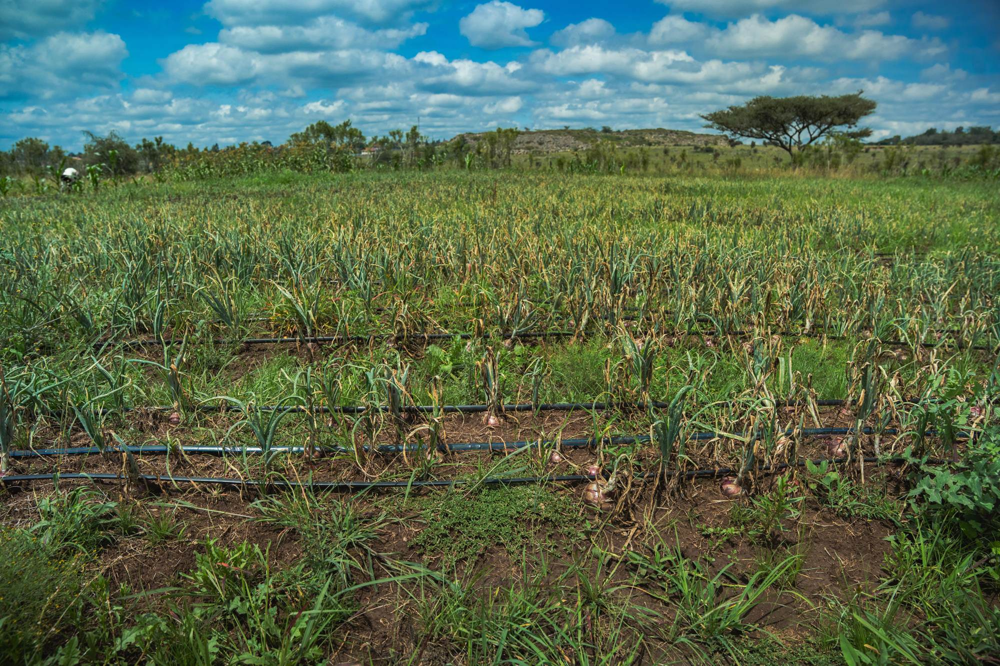

The land is already there
It is the one productive asset a school already owns, and on most sites it is growing nothing that anyone eats or sells.

Agriculture · Education · Opportunity
School Farm Network turns underused land at African schools into professionally managed farms — producing food, creating paid local work, and opening a route into agriculture for young people.
Our beginnings in Kenya
A school farm is not a garden project. It is a business that has to work in the field, in the accounts and on the plate.
Many African schools hold land that is unused or underproductive, while their students face unreliable access to meals and the community around them needs viable work.
It is the one productive asset a school already owns, and on most sites it is growing nothing that anyone eats or sells.
No consistent operations, no committed buyer, no financial control, and no evidence afterwards that any of it worked.
Meals, paid work, learning and better land come from the same field, or they do not come at all.

We operate the farms ourselves rather than handing a plan to someone else and hoping. Each stage has to be completed before the next one starts.
Verify land, water, governance, access, security and commercial viability before anything is built.
Establish irrigation, storage, fencing, soil preparation and the infrastructure the farm will run on.
Plan and manage crop cycles against real buyer demand and what the land and season will actually carry.
Sell the produce and deliver the agreed benefit back to the school.
Record costs, work, yields, school benefit and lessons, so that the next farm starts better than the last one did.
School land, operating capital, local labour and agricultural management.
A professionally managed farm, run to a plan rather than to the weather.
Produce and the revenue it earns.
Benefit to the school, paid work, learning and reinvestment.

Every outcome comes from the same productive asset. They are not four disconnected programmes that happen to share a field.
Productive land helps fund or supply meals for the students who learn on it.
Farms create paid local work, with an emphasis on opportunities for women in the surrounding community.
Schools gain a practical agricultural learning environment on their own ground.
Young people who want to farm rarely get near a commercial operation. On a school farm they work on one.
The point is not one good harvest. It is a model that can be handed to the next school and still work.
We run the farms ourselves. The people accountable for the result are the people doing the work.
Costs, work and outcomes are recorded as they happen. We publish what is verified and say plainly what is still being tested.
Every farm is designed so that the next one is easier — not so that the first one looks good.
A Kenyan public school can earn money for its children’s meals from the land it already sits on.
Matthew Benjamin Founder, School Farm Network
We are always interested in schools with land that is not working, and in people who want to see it put to productive use.